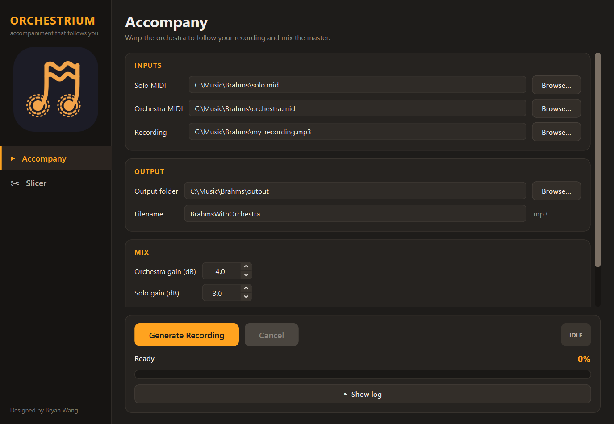
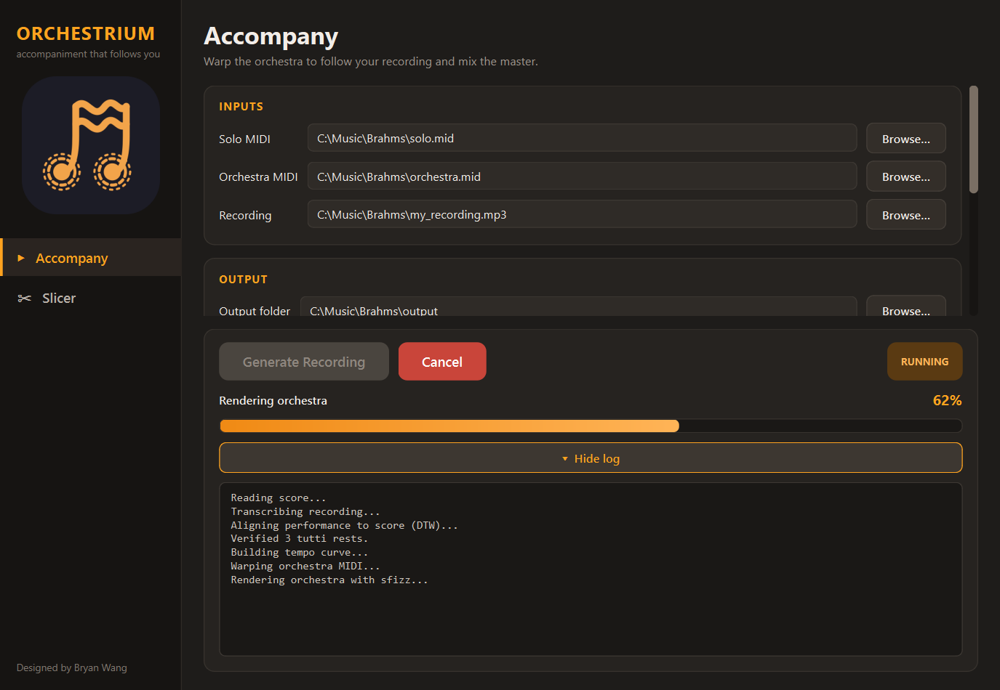
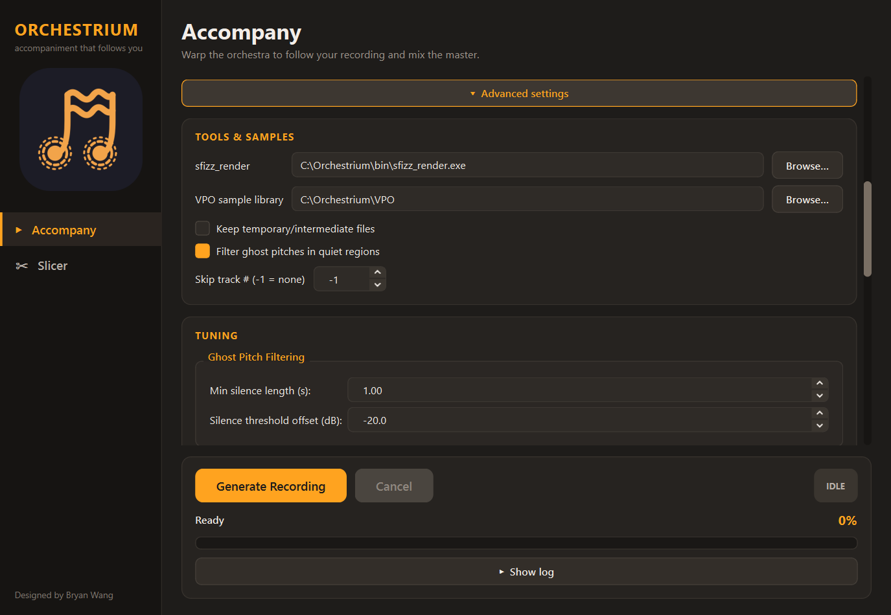
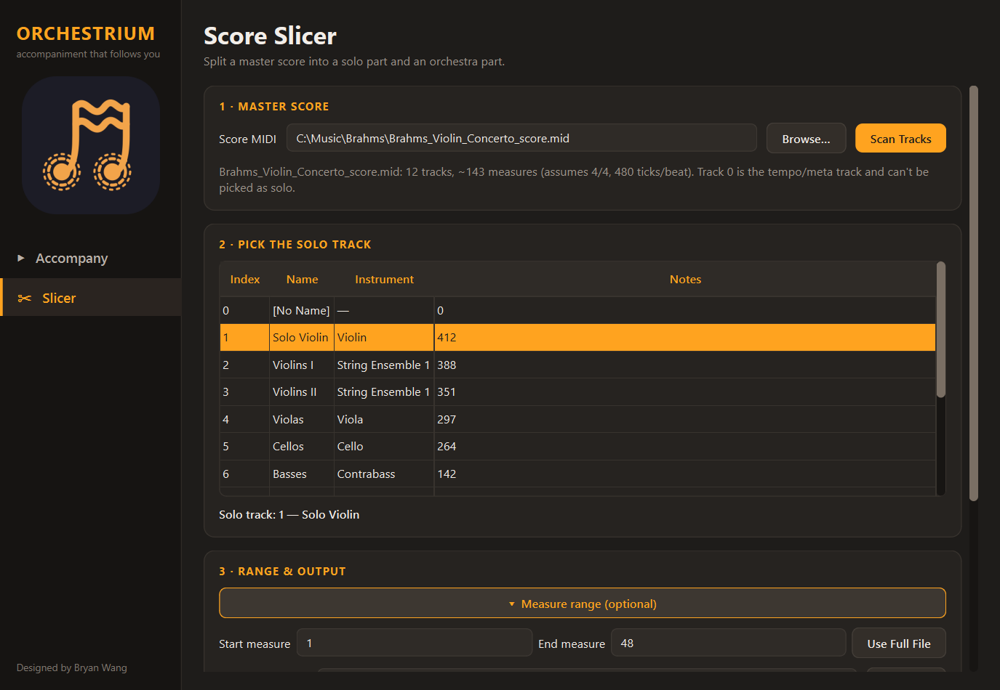

Play alone.
Sound like a full orchestra.
Orchestrium listens to how you actually played a piece — every rubato, pause, and push — and builds a real orchestral accompaniment that follows you, then mixes it into one finished recording.
Mendelssohn, before & after
A solo recording made at home, then the same take run through Orchestrium. Listen to the solo recording first, then switch to hear the same performance with the orchestra following along.
Everything happens automatically
No conducting, no manual syncing, no audio editing experience required.
Follows your tempo
Speeds up, slows down, and breathes with your playing instead of sticking to a rigid click track.
Real orchestral sound
The accompaniment is rendered with sampled orchestral instruments, not a flat synth playback.
Handles pauses naturally
Rests and held notes are detected and respected, so the orchestra never rushes ahead or cuts you off.
Simple, point-and-click
Two easy desktop apps handle everything — no coding or audio engineering experience needed.
You stay in control
Independent volume sliders balance your recording against the orchestra before the final mix.
Two simple tools, one window
Switch between them from the sidebar. Everything runs locally on your computer.
Accompany
Pick your solo score, the orchestra score and your recording, then press Generate Recording. Progress and a live log show each stage as it happens, and the finished mix is saved to the folder you chose.
Need more control? Open Advanced settings to adjust the mix balance, silence filtering, rest detection and tempo-curve tuning.



Score Slicer
Start from a full orchestral score instead of ready-made parts? Load the master MIDI and the slicer lists every track with its instrument and note count.
Click the solo track, optionally choose a range of measures, and it writes separate solo and orchestra files, ready to drop into Accompany.

From a recording to a finished mix
Four steps, all handled for you.
Prepare your files
Point the app at your solo score, the full orchestra score, and a recording of yourself playing.
It listens & aligns
Orchestrium transcribes your recording and figures out exactly how your timing differs from the score.
The orchestra is warped
The accompaniment is reshaped to follow your performance, then rendered with real sampled instruments.
Get your finished mix
Your recording and the new orchestra are blended into a single, ready-to-share master track.
Built on great open tools
Orchestrium stands on the shoulders of some excellent open-source and sample-library work.
Ready to try it yourself?
Download the Windows installer. It includes everything Orchestrium needs, including the orchestral sample library, so there is nothing else to set up.
- Download
Orchestrium-Setupfrom the latest release. - Run the installer and launch Orchestrium from the Start menu.
- Pick your files: a solo MIDI, an orchestra MIDI and a recording of your playing, then press Generate Recording.
Windows may show a SmartScreen warning because the installer isn't code-signed. Choose More info, then Run anyway. Prefer to run from source? See the instructions on GitHub.